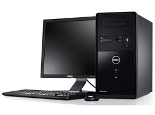
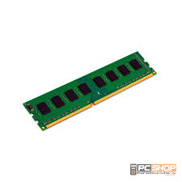
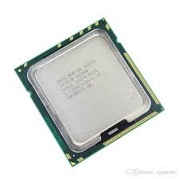
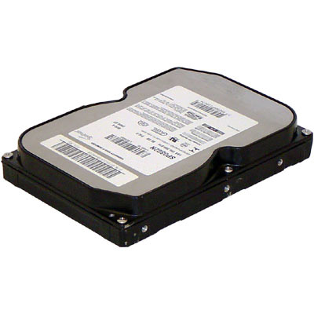
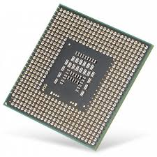
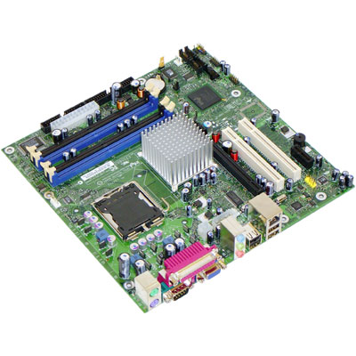
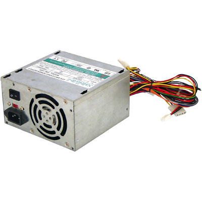

O Computador

O computador é uma máquina eletrónica capaz de executar determinada tarefa. Esta
dividido em 2 duas
partes, hardware e software.
Hardware: engloba todos os dispositivos físicos e equipamentos utilizados no processo de informações.
Software: é a parte lógica, o conjunto de instruções e dados processados pelos circuitos eletrônicos do hardware.Toda
interação dos usuários de computadores modernos é realizada através do software, que é a camada colocada
sobre o hardware que transforma o computador em algo útil para o ser humano.
Principais peças do computador
Memórias
Dispositivos que armazenam dados ou informações. Podem ser primárias ou secundarias.
Memórias primárias
Memórias – RAM (Random Access Memory) ou Memória de Acesso Randômico: é uma memória
volátil que serve para rodar aplicações depois que o computador já está ligado, e cujas informações são
perdidas depois do desligamento da máquina.

Memória ROM (Read-Only Memory) ou Memória Somente de Leitura: onde as informações básicas do
computadorficam armazenadas, portanto não são afetadas quando o dispositivo é desligado.

Memorias secundarias
HD (Hard Disck) – Disco Rígido:
ele serve como unidade de armazenamento permanente, guardando dados e programas.

Processador
O processador é o cérebro do computador, encarregado de processar a maior parte das informações. O
processador é
o componente mais complexo e frequentemente o mais caro, mas ele não pode fazer nada sozinho. Como todo
cérebro,
ele precisa de um corpo, que é formado pelos outros componentes do computador, incluindo memória, HD,
placa
de
vídeo e de rede, monitor, teclado e mouse.

Placa Mãe
Essa peça também pode ser interpretada como a espinha dorsal do computador, afinal, é ela que interliga
todos os
dispositivos do equipamento, ou seja, processador com memória RAM, disco rígido, placa gráfica, entre
outros.
Além de permitir o tráfego de informação, a placa também alimenta alguns periféricos com a energia
elétrica
que
recebe da fonte do gabinete.
Todas as placas-mãe possuem BIOS (Basic Input Output System). Trata-se de um pequeno software de
controle
armazenado em um chip de memória ROM que guarda configurações do hardware e informações referentes à
data e
hora. Para manter as configurações do BIOS, em geral, uma bateria de níquel-cádmio ou lítio é usada.
Dessa
forma, mesmo com o computador desligado, é possível manter o relógio do sistema ativo, assim como as
configurações de hardware.

Placa de Vídeo
Cabe à placa de vídeo gerar tudo o que vai aparecer em seu monitor, como imagens de jogos e de
aplicações,
efeitos, etc. Nos computadores mais baratos, as placas de vídeo estão incorporadas na placa-mãe, não
possuem
memória dedicada, e por isso utilizam a memória viva do sistema, normalmente denomina-se memória
compartilhada.
Já em computadores bons e mais sofisticados, o adaptador de vídeo pode ter um processador próprio, o GPU
ou
acelerador gráfico.
Trata-se de um processador capaz de gerar imagens e efeitos visuais tridimensionais, e
acelerar os bidimensionais, aliviando o trabalho do processador principal e gerando um resultado final
melhor e
mais rápido.
Fonte de Alimentação
A função básica da fonte de alimentação é transformar a corrente alternada da rede elétrica em corrente
contínua, filtrar e estabilizar a corrente e gerar as tensões de 3.3V, 5V e 12V fornecidas aos demais
componentes.
